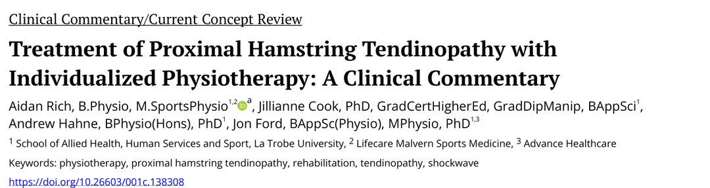
🔖原文首页（IJSPT 2025 年第 20 卷第 6 期）
📚 文献卡片
▪ 英文原题：Treatment of Proximal Hamstring Tendinopathy with Individualized Physiotherapy: A Clinical Commentary（近端腘绳肌腱病的个体化物理治疗：临床评论）
▪ 作者：Aidan Rich · Jillianne Cook · Andrew Hahne · Jon Ford
▪ 机构：拉筹伯大学（La Trobe University）联合健康、人类服务与运动学院；Lifecare Malvern 运动医学；Advance Healthcare（澳大利亚）
▪ 期刊：International Journal of Sports Physical Therapy（IJSPT）
▪ 年卷期：2025;20(6):892-910
▪ PMCID：PMC12129629
▪ 文章类型：临床评论 / 当前概念综述
▪ 证据级别：5 级
▪ 关键词：physiotherapy · proximal hamstring tendinopathy · rehabilitation · tendinopathy · shockwave
近端腘绳肌腱病（PHT）既见于运动人群，也见于久坐少动者，表现为臀下部局限性疼痛，在久坐（尤其坐硬面）、深蹲、上坡走或跑步时加重。患病率数据很少，但在运动人群中被认为常见且致残。
• 肌腱病连续体模型：急性过载 → 反应性肌腱病（大分子蛋白聚糖增加、肌腱肿胀，胶原结构完整）；持续慢性过载 → 失修/退变性肌腱病（胶原和基质紊乱）。负荷过多或过少都可能致病
• 肌腱主要承受拉力，但压缩负荷也会引起基质改变：PHT 中屈髋角度大的动作（弓步、踢、深蹲、拉伸腘绳肌）和坐姿直接压迫，都会在坐骨结节处产生压缩
• 手术和影像研究显示病变集中在坐骨结节附着处附近，支持“压缩是关键因素”的假说
• 最新系统综述：没有足够证据推荐某一种疗法优于另一种；冲击波相较 3 周运动有效，但该试验的运动方案与专家推荐不符
• 专家最常推荐的是教育 + 运动
本文介绍作者为 PHT 设计的教育 + 五阶段个体化运动方案，借鉴其他肌腱病临床试验中有效的原则，并结合近端腘绳肌的解剖和生物力学特点。该方案正在一项与体外冲击波（ESWT）对比的随机对照试验中使用（ACTRN12620001243909）。
| 阶段 | 目的 | 代表训练 | 剂量要点 | 疼痛上限 |
|---|---|---|---|---|
| 1 等长 | 镇痛、热身、让患者放心 | 仰卧腘绳肌臀桥 | 5 × 30～45 秒，间歇 90 秒 | 第 2 次结束时 ≤4/10 |
| 2 等张力量 | 腘绳肌力量/耐力，肌腱适应 | 臀桥、俯卧/站立屈膝 | 2～3 × 10～15 → 4～5 × 6～8 | ≤4/10 |
| 3 动力链 | 补齐小腿、臀大肌、大收肌等短板 | 提踵、臀推、伸膝、弹力带外展 | 耐力 2 × 20 → 力量 3 × 6～10 | — |
| 4 压缩负荷 | 逐步恢复对压缩的耐受 | 改良硬拉、弓步、台阶单腿桥 | 2 × 4～6 → 3 × 6～8，逐步加大屈髋 | ≤4/10 |
| 5 储能释能 | 需要爆发的项目才做 | 分腿蹲、专项动作 | 1～2 个训练 3 × 8～20 | ≤2/10 |
一句话概括：先减少坐压和拉伸，再从等长、等张、动力链练起，最后才逐步把屈髋压缩和爆发动作加回来。
• 提高腘绳肌自主激活（增强皮质脊髓兴奋性、减少皮质抑制）
• 改善肌-腱单元刚度、肌腱模量等力学特性；增加基质蛋白合成；与糖胺聚糖和液体动力学相关的神经化学作用
• 恢复腘绳肌复合体和动力链的负荷能力；改善牵张-缩短循环的协调
• 增加肌腱横截面积，引起肌腱结构改变
• 治疗关系（“工作联盟”）、安慰剂效应、自然病程和教育也可能起作用——各机制的贡献大小尚不确定
第 1、2 次就诊时发放标准化信息单（诊断、疼痛监测、压缩管理、高/低肌腱负荷管理），第 6 次（最后一次）再发出院建议，鼓励患者反复阅读。
| 主题 | 要点 |
|---|---|
| 诊断 | PHT 诊断不易，明确诊断并告诉患者疼痛和功能可能会改善，本身就能让人安心 |
| 疼痛监测 | 训练中允许一定的肌腱痛，常用上限 <4/10；超过时降低重量、负荷、次数和/或屈髋角度，或暂停该训练 第一阶段前 2 次允许较高疼痛（等长有镇痛作用）；第五阶段上限更低 |
| 延迟疼痛 | 训练后 24 小时内可重复任务的疼痛增加 ≤2/10 可以接受；增加 ≥3/10 且持续超过 24 小时，则调整训练 强调“疼痛≠损伤”；12～24 小时的延迟疼痛是判断耐受的最佳指标 |
| 恐惧回避 | Örebro 肌骨疼痛筛查问卷简版（ÖMPSQ-SF）第 9 题恐惧回避得分 >50 者，更要反复强调“疼痛≠损伤” |
| 压缩管理 | 减少坐骨结节处压缩：少久坐、少坐硬面，用软垫或分散压力的坐垫；暂时避免拉伸腘绳肌、深蹲、弓步等大角度屈髋动作 病变肌腱肿胀、含不耐压的胶原类型，对压缩耐受差；第四阶段再逐步恢复压缩 |
• 分级强化腘绳肌：第一阶段等长、第二阶段等张；等长以能全程保持高质量收缩为准，通过减少腿部支撑、改单腿或延长时间进阶；等张随力量提高或疼痛减轻加次数、重量、阻力
• 听觉提示：用外部节拍（如手机节拍器）提高腘绳肌自主激活，用于直接加载腘绳肌的第一、二、四阶段
• 对侧训练：除非疼痛或力量不允许，所有阶段都两侧分别练。单侧肌腱病常有双侧运动和感觉缺陷，提示中枢参与；单侧训练也能让对侧变强（“交叉教育”）
• 恢复动力链：PHT 患者常有臀大肌、小腿三头肌、内收肌力量不足，需要强化；各阶段都按需加入腰盆姿势和运动控制
• 个体化：按患者自己设定的目标（日常活动、运动、职业）安排训练；进阶速度取决于去适应程度、病情严重度、依从性和个体反应；第五阶段只给高储能释能需求者
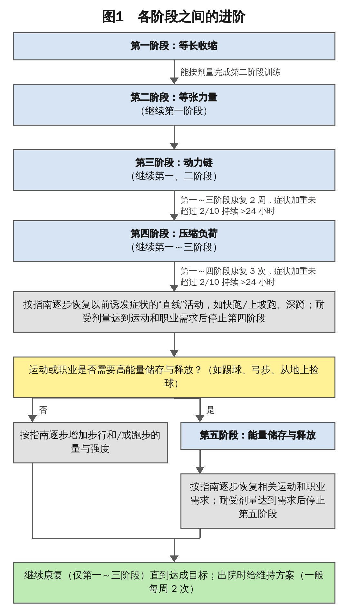
🔖图1：各阶段之间的进阶（原图为英文流程图，已按原内容中文重绘）
• 目的：疼痛高时减轻疼痛；作为后续训练的热身；让患者放心——有控制地加载腘绳肌是安全的
• 所有人从这一阶段开始；功能完全无痛、已在做维持训练时可以停
• 髌腱病研究中，等长收缩可即时减轻加载痛、提高力量，持续 45 分钟；其他肌腱病结果不一；PHT 中尚未测量（有 RCT 正在进行）
• 训练：仰卧腘绳肌臀桥（易实施、易调节；有腰痛等限制时可换其他动作）；5 次 × 30～45 秒
• 进阶：双腿 → 单腿、加重量或减少腿部支撑，前提是每次都能高质量保持 45 秒
• 腿不能抖；强调腰盆侧向和矢状面控制，避免骨盆过度前倾（对 PHT 不利）
• 前 2 次允许较高疼痛（等长的镇痛效果需要时间）；此后仍 >4/10，就降低负荷或调整腰盆控制提示
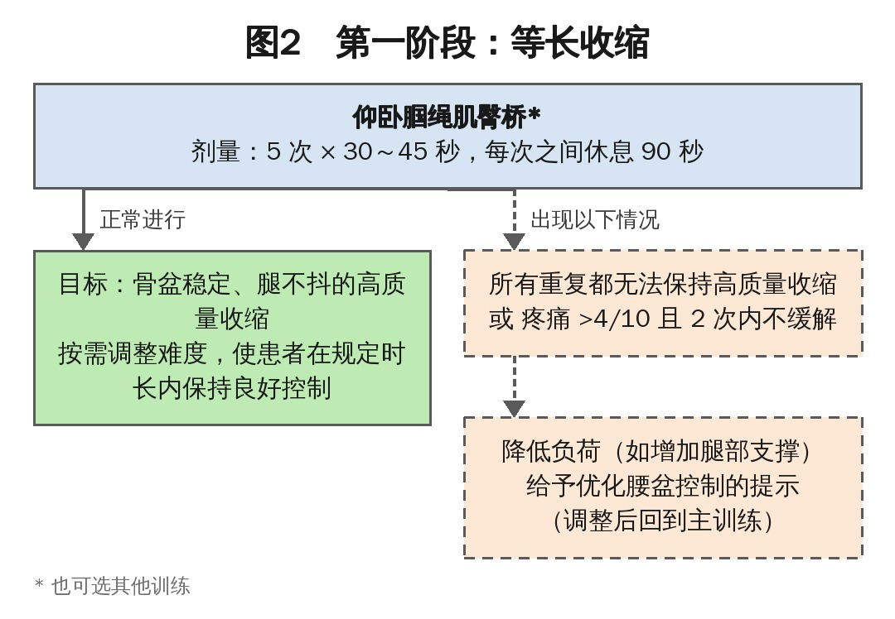
🔖图2：第一阶段：等长收缩的流程（原图为英文，已中文重绘）
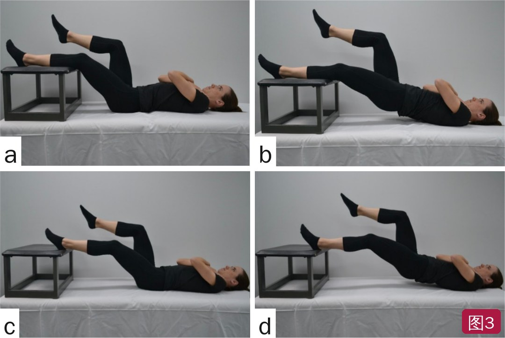
🔖图3：单腿腘绳肌臀桥——第一阶段做等长，第二阶段做等张。起始位（a）；等长保持位（b）；减少腿部支撑的进阶（c、d）（已重新排版）
• 目的：提高腘绳肌复合体的能力和运动控制；PHT 常见腘绳肌力量下降和萎缩
• 其他下肢肌腱病的分级强化训练能改善疼痛、功能障碍和功能
• 首选仍是仰卧腘绳肌臀桥；开始每周 3 次（或隔天），力量 ≥ 健侧后减为每周 2 次——病程长者可能需要 3～6 个月或更久
• 通常在第 1～2 次就诊时，能按本阶段参数完成动作后开始
• 重负荷、渐进的力量训练更能促进肌腱的适应性变化：先 2～3 组 × 10～15 次（低强度）重视技术，后期减少次数、加大强度，典型为 4～5 组 × 6～8 次
• 强度以“做不了下一组规范动作”为准；训练经验少或疼痛持续较高者要谨慎
• 可重复任务的疼痛增加 >2/10 并超过 24 小时 → 降低强度
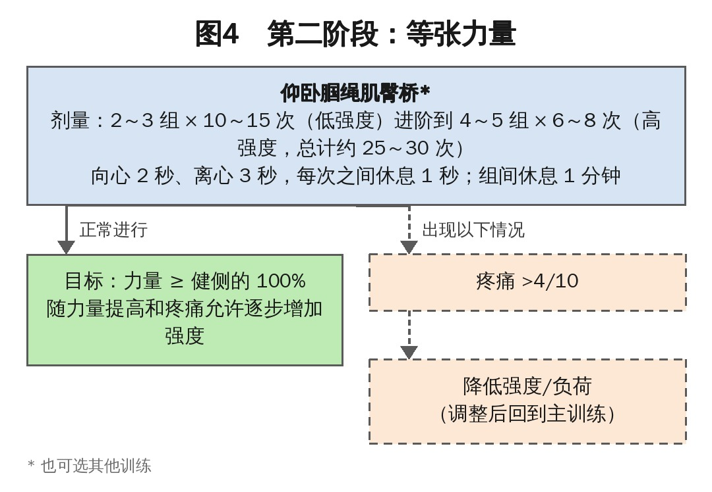
🔖图4：第二阶段：等张力量的流程（原图为英文，已中文重绘）
• 目的：提高动力链的能力、功能和运动控制；小腿三头肌和臀大肌力量下降在 PHT 中常见
• 动力链关系到功率产生、负荷的吸收与分配、跑姿是否正常。例：踝扭伤后小腿三头肌功能下降的跑者、腰痛后伸髋功能下降的跑者，都可能让腘绳肌承受更多负荷
• 所有人都练小腿和伸髋；客观测试（如单腿伸膝）发现股四头肌不足时加股四头肌
• 腰盆控制：观察下蹲、单腿站、走、跑中有无侧向骨盆控制差（Trendelenburg 征、同侧躯干侧屈）或骨盆过度前倾（结合腰椎前凸判断），有则用“运动控制”方式训练，只做高质量的重复
• 一般在第 2～3 次就诊开始；小腿和伸髋从“耐力”剂量（2 组 × 最多 20 次）达到里程碑后进阶到“力量”剂量（3 组 × 6～10 次）；股四头肌直接用力量剂量
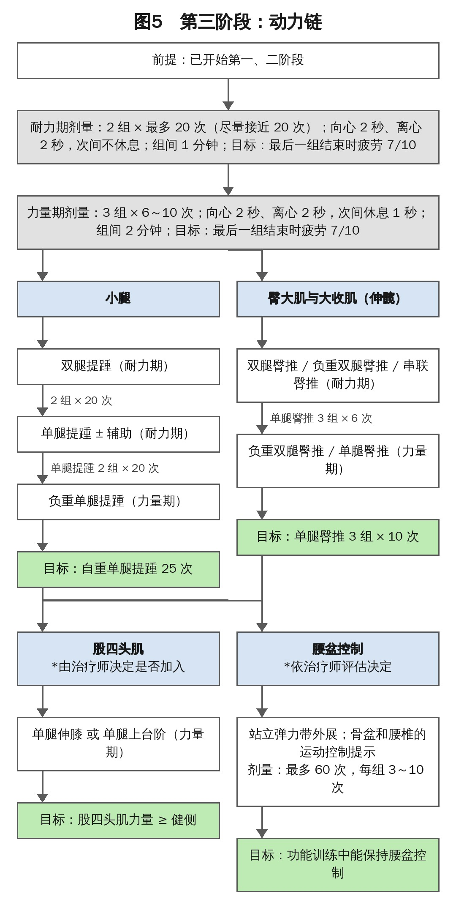
🔖图5：第三阶段：动力链的流程（原图为英文，已中文重绘）
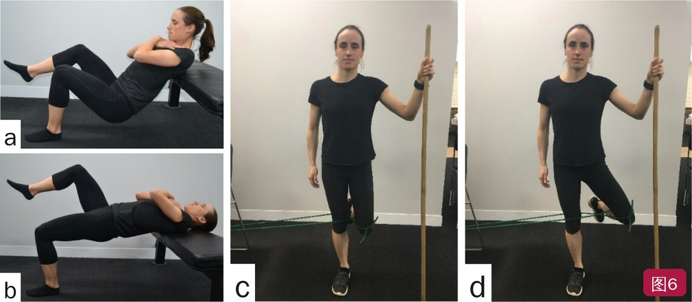
🔖图6：动力链训练——单腿臀推强化臀大肌和内收肌（a、b）；站立弹力带外展训练腰盆控制（c、d）（已重新排版）
• 目的：评估并逐步提高腘绳肌腱对压缩的耐受；个体的压缩需求达到后即停止，之后由运动/工作本身提供压缩
• 开始条件：第二阶段训练耐受至少 2 周；力量明显不足者往往更晚开始
• 训练：改良硬拉（图8），从接近患者最大功能所需重量开始，逐步加大屈髋角度和次数；不能硬拉（如腰痛）时可用弓步或抬高的臀桥
• 按日常目标决定压缩训练的性质和强度：例如澳式足球运动员要从地上捡球，比长跑者需要更大的屈髋和压缩耐受；园艺、体力劳动也要考虑
• 很多人的最大功能需求重量其实不大（如抱孩子、从低处拿东西）；想恢复硬拉训练的人则需要更大重量
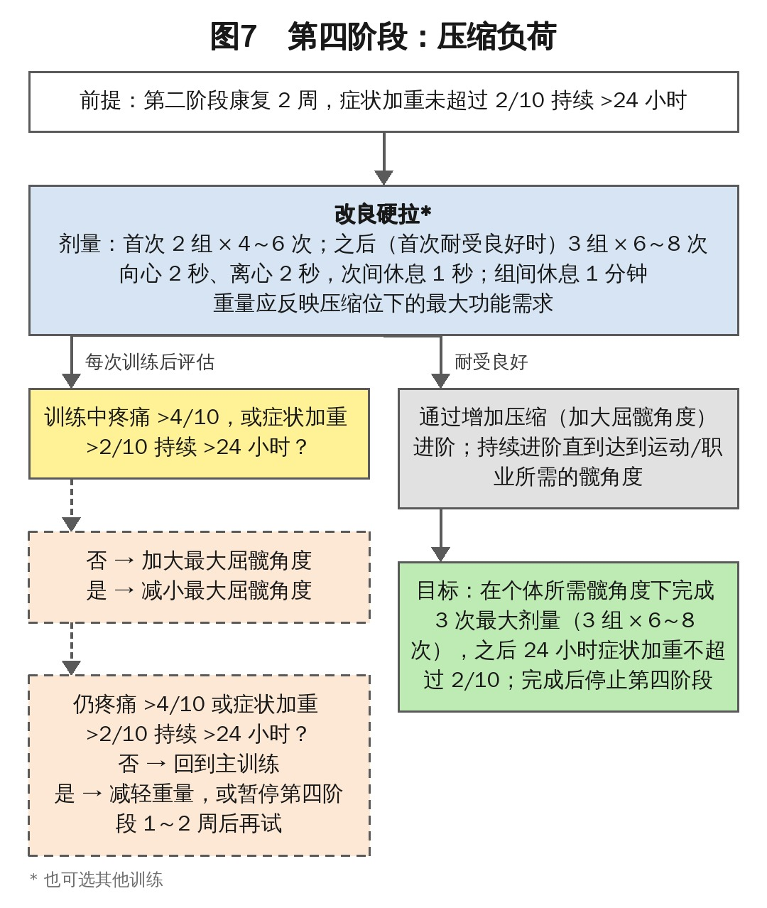
🔖图7：第四阶段：压缩负荷的流程（原图为英文，已中文重绘）
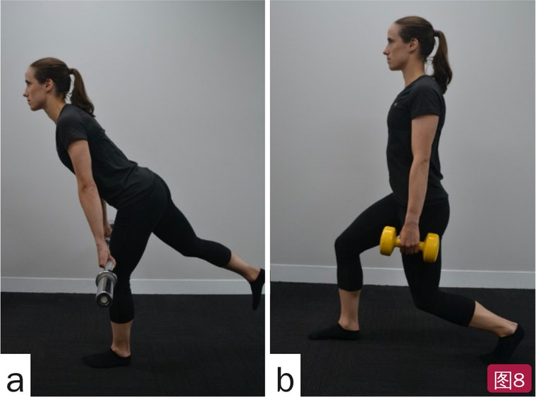
🔖图8：压缩训练——改良硬拉（a）、改良深弓步（b）
• 目的：通过提高肌腱刚度等生物学适应，增强腘绳肌和下肢的储能与释能能力；也用于评估场地类、球拍类运动员能否恢复调整后的训练
• 只给有高储能释能需求的人；以跑步为主（非场地运动）的运动员，负荷（速度、距离）容易量化、储能需求低，一般跳过此阶段，直接逐步恢复正常跑步训练
• 开始条件：患侧力量缺陷可忽略，第二、四阶段耐受良好；去适应明显者可能超过 12 周才到这一步
• 训练：分腿蹲，或按需求定制的专项动作——如模拟网球截击或低位反手的改良弓步，模拟足球中捡球的“腘绳肌铲球”动作
• 先试“储能”部分，再加入“释能”；疼痛上限更低：≤2/10（负荷更高，更易诱发疼痛加重）
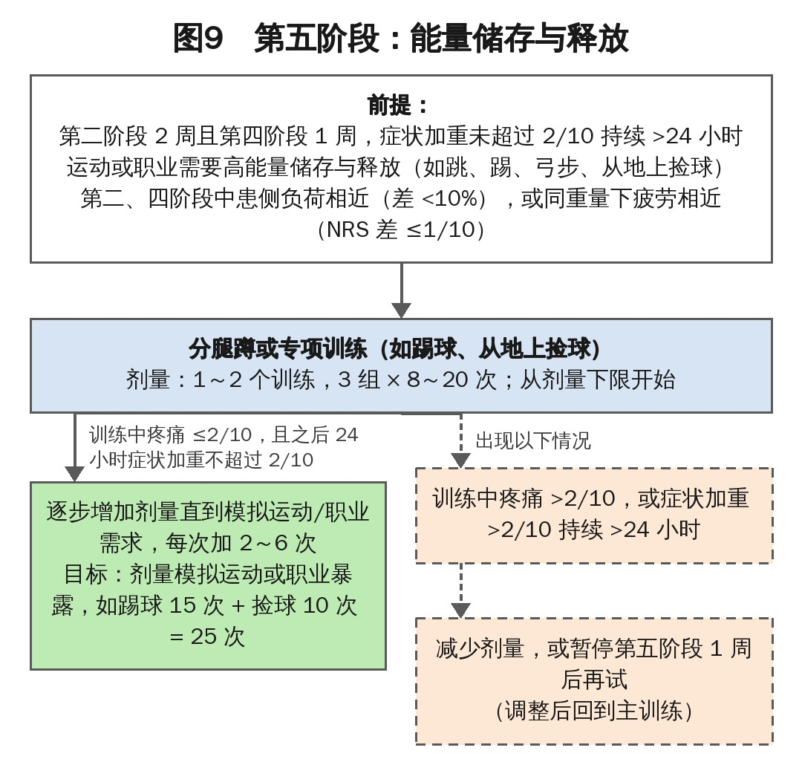
🔖图9：第五阶段：储能与释能的流程（原图为英文，已中文重绘）
• 跑步（尤其快跑、上坡跑）常诱发 PHT
• 只有跑步引起高疼痛或症状加重超过 24 小时，才要求完全停跑；否则可只停快跑或上坡跑
• 减少跑量时可用游泳、骑车、椭圆机等维持有氧能力，同样要监测延迟反应
• 完全停跑者首次跑步：在较长步行中跑 2 分钟（每次 1 分钟）；耐受后每次增加 1～3 分钟；累计跑到 20 分钟后，再按目标增加距离或速度
• 距离恢复后再小心加入上坡；含强度（快跑或坡跑）的跑步一般每周不超过 2 次（精英或高跑量者可 3 次）
• 尽量量化跑步负荷；观察跑姿：腰盆控制差、胸/躯干过度前屈、落地声音大（步幅过大）、步频（随速度变化）
• 园艺、深蹲、搬举、踢球等曾诱发疼痛的活动，同样从低量开始，按训练中和训练后的症状逐步增加
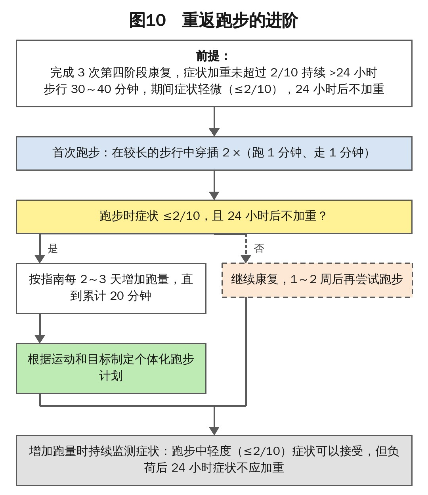
🔖图10：重返跑步的进阶（原图为英文，已中文重绘）
早期按两天一循环：第 1 天做规定训练，第 2 天做不诱发症状的训练（其他有氧、上肢力量），必要时加第一阶段。第四阶段一般在干预 1～2 个月以上后加到第 1 天。需要第五阶段者改为三天一循环。达成目标后，建议继续维持训练：从第一～三阶段选 2～3 个动作，每周 2 次；避免高负荷活动快速增加和连续高肌腱负荷日，部分人应长期避免某些动作（如全幅度大重量硬拉）。
表1 物理治疗各阶段概览
| 第一阶段：等长 | |
| 目的 | • 疼痛高时减轻疼痛 • 作为等张（或其他）训练前的“热身” • 让患者看到有控制地加载腘绳肌是安全的 • 提高腘绳肌自主激活 |
| 可选训练 | • 双腿或单腿腘绳肌臀桥 • 俯卧屈膝 • 站立屈膝 |
| 剂量 | 5 次 × 30～45 秒（每次之间休息 90 秒） ① 镇痛：每天最多 4 次 ② 作为大训练计划的第一个动作，约每周 3 次 |
| 目标 | 完成训练 |
| 注意 | • 优先保证高质量收缩（腿不抖、骨盆水平） • 按需继续第一阶段 • 第 2 次结束时疼痛 ≤4/10 |
| 第二阶段：等张力量 | |
| 目的 | • 提高腘绳肌复合体的力量/耐力 • 促进受累肌腱的积极力学适应 |
| 可选训练 | • 双腿或单腿腘绳肌臀桥 • 俯卧屈膝 • 站立屈膝 |
| 剂量 | 2～3 组 × 10～15 次，进阶到 4～5 组 × 6～8 次（向心 2 秒、离心 3 秒，次间休息 1 秒；组间 1 分钟） 每周 3 次（或隔天） |
| 目标 | 力量 ≥ 健侧 |
| 注意 | • 明显去适应和/或疼痛高时，开始可用高次数、低负荷 • 所有重复疼痛 ≤4/10 |
| 第三阶段：动力链 | |
| 目的 | • 补齐腘绳肌协同肌群的力量不足 • 恢复下肢动力链功能 |
| 可选训练 | • 小腿：双腿提踵、单腿提踵、负重单腿提踵 • 臀大肌和大收肌：双腿臀推、负重双腿臀推、串联臀推、单腿臀推 • 髋外侧：站立弹力带外展 • 股四头肌：坐位伸膝、上台阶 |
| 剂量 | 耐力期：2 组 × 最多 20 次（向心 2 秒、离心 2 秒，次间不休息；组间 1 分钟） 力量期：3 组 × 6～10 次（向心 2 秒、离心 2 秒，次间 1 秒；组间 2 分钟） 每周 3 次（或隔天） *髋外侧用运动控制剂量：最多 60 次，每组 3～10 次，每周 3 次（或隔天） |
| 目标 | • 小腿：自重单腿提踵 22～25 次 • 臀大肌和大收肌：单腿臀推 3 组 × 10 次 • 髋外侧：单腿站立时腰盆控制良好 • 股四头肌：力量 ≥ 健侧 |
| 注意 | • 运动控制和腰盆控制由治疗师评估，按需给予提示 • 髋外侧和股四头肌训练并非所有人都需要 |
| 第四阶段：压缩负荷 | |
| 目的 | 评估腘绳肌腱复合体对压缩负荷的耐受 |
| 可选训练 | • 逐步加大屈髋的双腿硬拉 • 逐步加大屈髋的单腿硬拉 • 弓步 • 台阶上单腿臀桥 |
| 剂量 | 2 组 × 4～6 次，进阶到 3 组 × 6～8 次（向心 2 秒、离心 2 秒，次间 1 秒；组间 2 分钟） 每周 3 次（或隔天） |
| 目标 | 在运动/职业所需髋角度下完成 2～3 次训练，症状无明显加重 |
| 注意 | • 通过加大屈髋角度进阶 • 负荷反映运动、职业和/或娱乐需求 • 在所需髋角度完成 2～3 次后停止第四阶段 |
| 第五阶段：储能与释能 | |
| 目的 | 提高腘绳肌和下肢的储能与释能能力 |
| 可选训练 | • 分腿蹲 • 专项动作 |
| 剂量 | 1～2 个训练，3 组 × 8～20 次 每周 2～3 天 |
| 目标 | 剂量模拟运动/职业需求，症状无明显加重 |
| 注意 | • 先试储能部分，后加释能 • 本阶段疼痛上限更低：≤2/10 |
表2 各阶段的组合（按日循环）
| 干预阶段 | 第 1 天 | 第 2 天 | 第 3 天 |
|---|---|---|---|
| 早期（不跑） | 训练：第一/二/三阶段 有氧/其他：较少 跑步：否 | 训练：第一阶段* 有氧/其他：较多 跑步：否 | 不适用 |
| 早期（跑） | 训练：第一/二/三阶段 有氧/其他：较少 跑步：否 | 训练：第一阶段* 有氧/其他：较多† 跑步：是 | 不适用 |
| 中期（不跑） | 训练：第一/二/三/四阶段‡ 有氧/其他：较少 跑步：否 | 训练：第一阶段* 有氧/其他：较多 跑步：否 | 不适用 |
| 中期（跑） | 训练：第一/二/三/四阶段‡ 有氧/其他：较少 跑步：否或少量 | 训练：第一阶段* 有氧/其他：较多 跑步：是/较多量或强度 | 不适用 |
| 后期（需要第五阶段） | 训练：第一/二/三/四阶段‡ 有氧/其他：较少 跑步：否 | 训练：第一阶段*、第五阶段§ 有氧/其他：调整后的训练 跑步：否或少量 | 训练：第一阶段* 有氧/其他：少量 |
| 恢复正常训练/出院** | 训练：第一/二/三阶段 有氧/其他：较少 跑步：否或少量 | 训练：第一阶段* 有氧/其他：全量训练（高量） | 训练：第一阶段* 有氧/其他：全量训练（低/中量） |
* 按个体反应和疼痛按需进行；† 含个体耐受范围内的跑步；‡ 功能需求达到后立即停止第四阶段；§ 高储能释能已纳入训练后停止第五阶段；** 第 2、3 天可按日常安排互换，出院时的训练处方因运动需求而异。
• 证据级别低：5 级临床评论，方案尚未发表疗效数据；正在一项与冲击波对比的 RCT 中使用，结果出来后才能判断效果
• 亮点：每个阶段都有明确的剂量、疼痛上限、进阶条件和调整办法（7 张流程图），并把“压缩负荷”单独作为一个阶段处理，切中 PHT 的病理特点
• 机制多为推测：等长镇痛来自髌腱病研究，在 PHT 中尚未测量；动力链强化在 RCT 中尚未研究
• 前后数字不一致：第四阶段组间休息，表 1 写 2 分钟，图 7 写 1 分钟；小腿目标，表 1 写 22～25 次，图 5 写 25 次；图 1 中第三阶段进入第四阶段写“2 周”，正文写“第二阶段耐受至少 2 周”
• 小瑕疵：Prerequisites 拼写为 Prerequisties，正文有 demends、voume 等拼写错误
① 先教育：疼痛 <4/10 可接受，看 24 小时延迟反应；少坐硬面、暂不拉伸腘绳肌
② 第一阶段：仰卧臀桥等长 5 × 30～45 秒，腿不抖、骨盆稳
③ 第二阶段：臀桥等张 2～3 × 10～15 → 4～5 × 6～8，直到力量 ≥ 健侧
④ 第三阶段：提踵、臀推、按需股四头肌和髋外侧，补齐动力链
⑤ 第四阶段：改良硬拉逐步加大屈髋，恢复压缩耐受，达到需求即停
⑥ 第五阶段与跑步：有爆发需求才做，疼痛 ≤2/10；跑步从 2 分钟开始，累计 20 分钟后再加距离和速度
欢迎关注悦美力公众号，获取更多物理治疗的专业知识！
📄参考文献：
Rich A, Cook J, Hahne A, Ford J. Treatment of Proximal Hamstring Tendinopathy with Individualized Physiotherapy: A Clinical Commentary. Int J Sports Phys Ther. 2025;20(6):892-910. PMCID: PMC12129629.
文中图片均来自原文：图 1、2、4、5、7、9、10 英文流程图已按原内容中文重绘，图 3、6、8 照片已重新排版；表 1～2 已译为中文，仅用于学术交流。